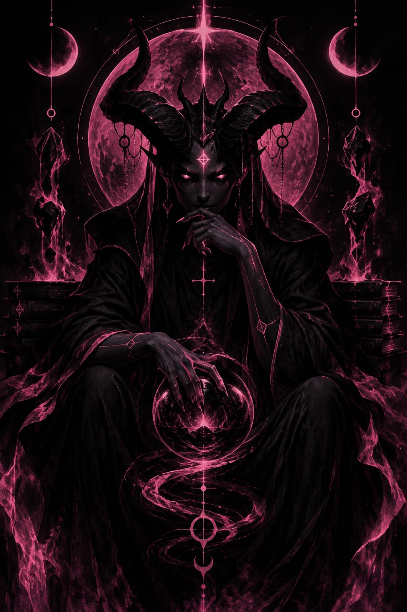

LUZ Y OSCURIDAD
Representan lo visible y lo desconocido, el conocimiento y la incertidumbre, aquello que revelamos y aquello que permanece oculto.
ARCHIVO II · FILOSOFÍA · REGISTRO 02
LA NATURALEZA DE LOS OPUESTOS
La dualidad representa la coexistencia de fuerzas, conceptos y principios aparentemente contrarios. Luz y oscuridad, creación y destrucción, orden y caos. A través de estas relaciones, la filosofía intenta comprender cómo los opuestos construyen nuestra percepción de la realidad.
EXPLORAR PENSAMIENTO VOLVER AL ARCHIVO
REGISTRO FILOSÓFICO
La reflexión sobre los opuestos aparece en diferentes tradiciones filosóficas de la antigüedad. Heráclito de Éfeso consideraba que el cambio y la tensión entre contrarios eran fundamentales para comprender el funcionamiento del mundo. En otras tradiciones, como el pensamiento taoísta, el Yin y el Yang representan fuerzas complementarias cuya interacción expresa el equilibrio de la naturaleza. Estas perspectivas permiten entender que aquello que parece contrario no necesariamente debe ser interpretado como una separación absoluta, sino como una relación que participa en la construcción de la realidad.
PRINCIPIOS DE OPOSICIÓN
La realidad puede comprenderse a través de fuerzas que parecen contrarias, pero cuya interacción transforma constantemente el mundo.
Representan lo visible y lo desconocido, el conocimiento y la incertidumbre, aquello que revelamos y aquello que permanece oculto.
Dos principios que reflejan la estructura y la transformación. El orden establece límites, mientras el caos rompe estructuras y abre nuevas posibilidades.
La transformación constante de la existencia. Algo puede terminar para permitir que otra cosa comience y encuentre una nueva forma de ser.
BIBLIOTECA FILOSÓFICA
Pensadores y tradiciones que exploraron la relación entre los opuestos y el equilibrio de la realidad.
Sus reflexiones sobre la tensión entre contrarios permiten explorar cómo los opuestos participan en el movimiento y la transformación del mundo.
CONSULTAR ESTUDIOLa tradición taoísta presenta el Yin y el Yang como principios complementarios cuya interacción permite comprender los cambios de la naturaleza.
CONSULTAR ESTUDIOUna aproximación a los primeros pensadores griegos y sus explicaciones sobre el origen, la naturaleza y la estructura de la realidad.
CONSULTAR ESTUDIO